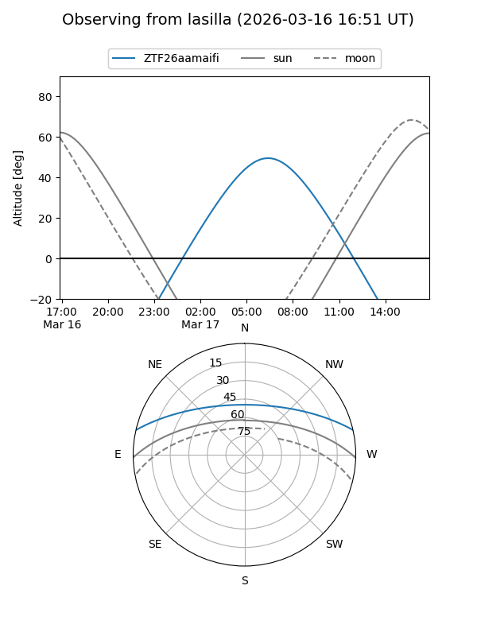
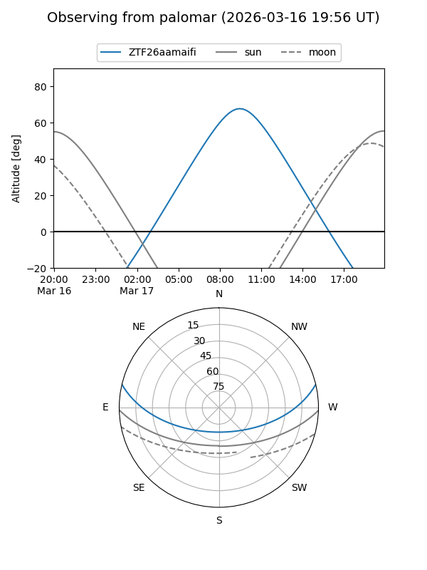

ZTF26aamaifi
Target ZTF26aamaifi at 2026-03-16 13:10
Aliases and brokers:
FINK: link
Lasair: link
ALeRCE: link
alt names
ZTF26aamaifi (ztf,fink_ztf)
Coordinates:
equatorial (ra, dec) = 199.6007,+11.31383
equatorial (HMS+DMS) = 13:18:24.17,+11:18:49.77
galactic (l, b) = (326.0646,+72.96305)
Flags:
Photometry:
last ztfg=17.95
1 ztfg detections
Lightcurve
Visibility


Additional plots